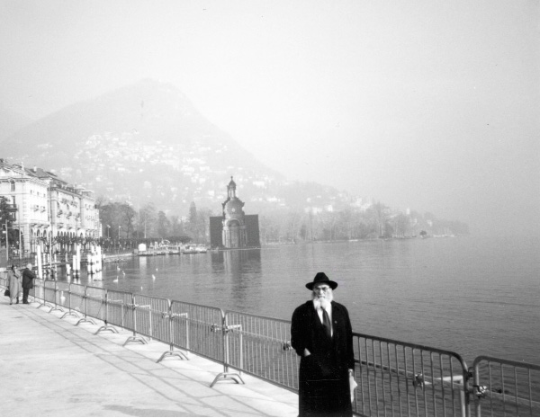

Revisiting Chassidic Petersburg
The city of Petersburg (Leningrad) was founded a little over 300 years ago. * Petersburg is the only city visited by all seven Chabad leaders, and it is no coincidence that Chassidic life flourished there as it continues to do till today. * Beis Moshiach spoke with a few Chassidim who lived in Petersburg (then Leningrad) in their youth and returned to visit fifty years later: R’ Yehuda Leib (Leibel) Mochkin, R’ Zushe Gross, and Mrs. Rochel Zamir.

R’ LEIBEL MOCHKIN
R’ Leibel Mochkin spent many years in Leningrad in his youth. After the fall of the Soviet Union, he visited the CIS a number of times, mainly in 5754-5755.
He doesn’t speak in emotional terms, yet you can’t help but hear the emotion and nostalgia when he recalls those days, back then.
“In Leningrad, there were two shuls in the same courtyard; a big shul that was open for davening only on Yomim Tovim, while the rest of the year it was open only for tourists, and next to it was a smaller shul, the Chabad shul. That is where t’filla with avoda, learning Torah with chayus, and of course, Chassidishe farbrengens, took place. From there, Chassidus radiated out to the entire area.
“During my visit, I went to the little Chabad shul. I instinctively sat down at one of the tables and began reminiscing. I could picture the Chassid, R’ Gershon Ber Levin, brother of R’ Yisroel Neveler, who once came to farbreng in the shul and saw the great Chassidim (R’ Chonye Morosov, R’ Shmuel Leib Levin, R’ Dovid Horodoker, and others) sitting at the table with farbaisen (cake, cookies). He sat down next to them and began plaintively saying – how could Chassidim sit at a table with farbaisen? Herring is one thing, but farbaisen?! That is so megusham (coarse)!
“Then I visited the house in which I had previously lived. During the years we lived in Leningrad we moved a number of times. At first we lived in a small house, but after the family grew and we began hosting many guests, we had to move to a bigger apartment. We swapped homes with a Chassid by the name of R’ Avrohom Yeshaya Shapiro, a Chassid and big yerei Shamayim, who had a big house.
“Our house was very far from the main shul but it was always the center for Chassidim. We always had guests, some of them illegals who were not allowed to be on the street. When the great Chassidim, like R’ Dovid Horodoker or R’ Aharon Leib Tzeitlin, came to our house, it was a festive day for my father, R’ Peretz. We often had farbrengens in our house on Shabbos and special days.
“Many things came to mind as I walked the spacious streets of Leningrad. I could see the homes of the Chassidim and they reminded me of other times, long ago.
“I recalled that when I was already in yeshiva in Kutais, they sent me to Leningrad in order to raise money for the yeshiva. When I arrived in Leningrad, my father did not feel well and he could not fundraise on his own as he did many times before. He gave me the names of Chassidim and asked me to go to them myself.
“I don’t remember now all of the people I went to, but I remember the generosity of R’ Mulle Pruss. I also remember visiting the home of R’ Chaim Minkowitz. He had no money to give but he said, ‘Since your father sent you to me to collect money for Tomchei T’mimim, I must participate.’ He took out some gold coins that he had hidden away, which he had designated as payment to a dentist to make dentures for his wife. When he gave them to me he said, ‘My wife can manage without teeth but the yeshiva must have this money.’
“When I passed another street, I couldn’t help but smile when I remembered the home of one of the Chassidim. After he married he bought a nice house and furnished it handsomely. The Chassidim, who were accustomed to living simply, did not look favorably at this. One winter day my father farbrenged in our house and after making a few l’chaims he took all the Chassidim to the home of this Chassid.
“The streets were full of mud and when they all arrived at the nice home of the Chassid, their clothes were filthy. That is how they entered the Chassid’s house. My father went straight to the inner room and lay down on the bed, putting his dirty shoes there. Only then, did he farbreng with the Chassid. As a result of this farbrengen the Chassid changed completely. From then on it was known that matters of this world meant nothing to him.
“Those are just some of the memories that came to mind on my visits to Leningrad.”
RABBI ZUSHE GROSS
When R’ Zushe Gross of B’nei Brak tells a story, he tells it in great detail. With his marvelous way with words he describes what happened, how, and who said what. With sparkling eyes and hand motions he delights in conjuring up what took place. To hear a story from him is to be whisked away to that faraway time and to experience it.
Since perestroika, R’ Zushe went back to his birthplace of Petersburg a number of times. He was born and raised there until World War II began, and then he returned there and lived in the home of his grandmother, Mrs. Devora Gutta Mindel, the wife of the Chassid, R’ Shmuel Mindel.
Fifty years passed since R’ Zushe left Petersburg and he returned with overflowing emotions.
“The plane landed in the middle of the night at Pulkovo airport, where a representative of R’ Menachem Mendel Pevsner, the rav of Petersburg, waited for me. I traveled to the apartment that he had prepared for me, and in the meantime I looked out the windows of the car and was able to identify the streets.
“I was excited because I knew that on one of the nearby streets was where my parents lived over fifty years ago. I couldn’t wait and despite the relatively late hour I left my apartment and walked in the direction of ‘my’ house. It was very cold outside with the temperature reaching minus 6-8 Celsius. Despite the snow, I walked quickly through streets that were familiar to me. Everything was closed but I continued walking. I turned to Dekabristov Street and looked right. I saw the grocery store. Yes, the same store with the same door and even the same windows remained. I could see myself standing here at four in the morning, a young, skinny boy, waiting impatiently on a long line in order to buy some bread for my hungry family, along with many other unfortunates.
“Ah, Petersburg, a big, beautiful city. The atmosphere, for some reason, is somber. The city is comprised of many islands with canals of water running through. The large Neva River flows on the edge of the city. This river is famous to chassidim because that is where the Alter Rebbe sanctified the new moon while under arrest.
“Petersburg was a capitol city named for Czar Peter. The location is unnatural as it is built on rivers and swamps. They say that the city was built on people’s bones, because hundreds of thousands of people died of starvation and cold in the period when the royal palaces were constructed, starting in the 17th and 18th centuries. The city was built up already in the time of the Alter Rebbe and served as the capitol of Russia.
“I walked down the street and recognized all the buildings. There was the school that I had to attend and which I avoided and next to it is a big stadium. I stood facing our house on 50 Dekabristov Street and then climbed the stairs. Even the brown floor tiles that were laid temporarily as ‘patches’ remained. Unfortunately, those living there did not allow me to enter.
“I call it ‘our’ apartment, but the apartment served as a meeting place for the Chassidim. Many farbrengens took place in our house, even in the worst of times when nobody knew what would happen the next moment. We always had guests from various places.
“I myself can recall some bits of the farbrengens that took place in our house even though I was so young. One day some T’mimim came to town from Nevel. Word got out that a farbrengen would be taking place in our house in honor of a special date. R’ Itche Raskin and R’ Peretz Mochkin farbrenged. The material state of the bachurim was pathetic. They were starving and their clothes were tattered and their shoes were ripped. In the middle of the farbrengen my father went to the market and bought a suitcase full of shoes in different sizes and brought it home. In the middle of the farbrengen each person went over to the suitcase and picked a pair of shoes.
“I am reminded of another farbrengen in Petersburg that my father, R’ Mulle Pruss, told me about. I don’t remember the actual farbrengen because I was just born, but the story is etched in my mind.
“It was Purim 5697/1937, a terrible time. Many Chassidim were arrested and nobody was assured of his freedom. Despite the difficult circumstances, a farbrengen was held in the home of R’ Chaim Minkowitz. All were there, R’ Chonye Morosov, R’ Peretz Mochkin, R’ Avrohom Eliyahu Plotkin, and others.
“R’ Chonye took a lot of mashke and farbrenged. At a certain point he grabbed R’ Plotkin and said something to the effect of ‘Today I am here, but tomorrow they will take me and you will remain here. All responsibility for matters of Judaism will remain with you. The point is not to be a genius in Nigleh or a big maskil in Chassidus. These times require us to preserve the embers. We cannot abandon the work of educating Jewish children. The cycle needs to continue like a relay race of shluchim. When one is taken, the next one passes the shlichus to the one following him.’
“This shook everyone up. Indeed, after some time, R’ Chonye was taken and he never returned. What he said came to pass. They continued the chadarim with mesirus nefesh and when a melamed was arrested, another one came and took his place and the learning continued somewhere else.
“I was still standing on the street in the middle of the night when I suddenly remembered the Chassid, R’ Lazer Kublanov. When I was a young boy and my father was in jail he invited me to his house to eat lunch. With a feeling of respect and gratitude I decided to walk to his house on Maklina Street. I was surprised once again to see that his apartment too, on the first floor, looked just as it did then, with the same old wooden door.
***
“I have many memories of that city which is why it is so dear to my heart. One of the things closest to my heart is the shul, the Chabad minyan on the second floor, to the left of the big shul.
“I got up early on Thursday and went to shul with great excitement. I met some old Jews there, a handful of survivors. I couldn’t restrain myself and with tears choking my throat I shouted the bracha of ‘SheHechiyanu’ with the same tune that we use before reading Megillas Esther.
“Even before I went in, I remembered that right here, at the door, sat my grandfather, R’ Shmuel Mindel. He was a distinguished talmid chacham and yet, he was humble and avoided the limelight. He was a Chassidic ‘image.’ He always sat near the door of the shul and refused to sit on the eastern wall. Years later, R’ Zalman Shimon Dworkin told me that my grandfather recited Tikkun Chatzos every night.
“For a moment, I came back to the present and looked around me. I saw a few old men in tallis and t’fillin, some only with a tallis. They looked at me in astonishment and gave me shalom aleichem, asking me curiously where I was from. I told them I had returned to the place I had left 48 years earlier and they nodded knowingly.
“I walked towards mizrach and looked to the right where Anash used to sit and pour our their hearts in prayer. The rav would stand and daven, and near him the rosh ha’kahal. I couldn’t help but turn my head towards where the informer would sit.
“My eyes wandered further – there is where R’ Epstein would stand and daven with avoda. R’ Epstein had been the rav of the Lubavitcher Chassidim in Petersburg for three years. I could see him, in my mind’s eye, standing on Hoshana Raba one year, holding the Dalet minim, a rarity in those days, and circling the bima as he cried bitterly. There was plenty to cry about.
“I went up to the women’s section in order to see where my righteous grandmother would sit and daven fervently from her worn-out Siddur. I met some old women up there who had lived in Nevel and one of them knew my father’s sister. When I examined the little things, I saw that everything remained nicely as before. The decorative metal of the lions on the Aron Kodesh and the iron letters of ‘Ma Tovu Ohalecha Yaakov’ were still there.
“Although the gabbaim were government appointees, the few Chassidim still managed to retain the Chassidic flavor of the minyan. I remember that on Yud and Yud-Tes Kislev they did not say Tachanun. When one of the men would ask why not, the meshamesh, R’ Mendel Beliniki would simply say, ‘You don’t ask questions.’ He was afraid to mention that it was Yud-Tes Kislev lest he be accused of celebrating counter-revolutionary holidays.
“The fear in the shul was palpable. The place swarmed with informers, and Anash were careful not to talk to one another so as not to give away the fact that they knew one another. When absolutely necessary they would exchange quick whispered snatches clandestinely or they would motion to meet in the yard or the bathroom, where they conveyed their messages.”
***
“During the day, I visited the Ohr Avner school. I saw 170 children learning and davening. I saw them learning Torah without interference, and once again, the memories came back to me.
“When I a child, my brother Berel and I were the only children there. When Berel left the city, I remained alone, a child of 10. I was able to read the Siddur and even to learn Chumash, Mishnayos and a little Gemara, unusual for those days. This is why I got plenty of attention from the Chassidim in shul. They hired a melamed for me to learn Gemara and he would regularly come to my grandmother’s house and teach me. Once in a while, R’ Nachum Garelik would test me and he was pleased with my answers.
“The relationship among the Chassidim was completely different than it is today. I remember that when I was a boy, I once went home from shul. It was a Friday and I suddenly met the Chassid, R’ Mendel Golombovitz. He was older and distinguished and he stopped me and told me a nice vort which I remember till today. Despite his age and stature, he bothered to stop me, a ten year old, and encourage me with words of chizuk as though to say, don’t be despondent. Now we are in a difficult state, but when Moshiach comes, it will all be good.”
MRS. ROCHEL ZAMIR
“In 5752, I went with my older sister Fania and her husband to Leningrad. We grew up there with our parents, R’ Yaakov and Rivka Kleinman, who were Chassidim and yerei Shamayim.
“We lived at 3 Pradilnaya Street but were told the name was changed to Labutina. My sister and I walked around but weren’t convinced. Then I told my sister that I recognized the windows of the house. We remembered a big house comprised of buildings in the center of which was a courtyard and gate. The house we lived in was opposite the gate.
“It was 17 Tammuz 5752 and at midnight it was still broad daylight. Since we were unsure, we spoke to some old women who sat chatting in the garden. I asked whether they knew a watchmaker who lived there and if so, where did he live. They remembered the watchmaker, my father, and pointed towards the house I had spoken of earlier. ‘If you want to know other details,’ they said, ‘in this building lives Vitzya Golobayev. Go up to him and he will tell you more.’
“My sister and I went up to his house and knocked on the door. ‘Who is there?’ someone called out, and we said we lived here fifty years earlier.
“He soon opened the door and looked at us and his first question was, ‘Where is Raya?’
“I shivered and said it was me. ‘You?’ he asked excitedly. ‘You know that we were together in first grade and we were also together in Siberia.’
“As he said this, I remembered scenes from those sad days. I recalled when the war with the Germans began. The front rapidly approached Leningrad. I remember the people clustered together and talking quietly. With worried faces they looked upward and pointed at black specks which were the enemies’ planes. The children did not know what was going on, but they sensed that it was something horrible. They did not ask and nobody explained anything to them.
“As the front approached, the government announced the emergency evacuation of all children from Leningrad to a safer place. This was to save them and also to allow the parents the freedom to work to defend the city. We were separated, we three children from our parents, and that was the last time we saw them.”
***
“Vitzya happily brought us into his house. He told us about the house and what had happened to it in recent years. Then he said, ‘The apartment under mine was your apartment. A woman took it over after the war. Not only that, but since the houses were abandoned, she stole a lot of furniture and items from nearby houses and this is why she does not allow anyone into her apartment.’
“I asked him, almost pleadingly, ‘Can you help us? We just want a peek. We don’t want anything back.’ He apologized and said he did not talk to her.
“My sister and I decided to try anyway. We knocked at her door and said we only wanted to take a look at our home. We even offered to pay her but she refused. ‘You didn’t live here. Go to your synagogue,’ she shouted from behind the closed door.
“As I stood outside my parents’ home, I couldn’t stop crying. I could remember when I was a child of eight or nine and I could picture the house and yard where we played, my brother (the artist, R’ Zalman Kleinman) and I. I felt homesick. I looked to see whether the mezuza remained, the mezuza my father had put up. In my imagination I could see the negel vasser he put at my bed every night.
“I remembered the beautiful Friday nights. We were in the house with my mother. We sat together next to the candles. She would play a game with us in which we were going together to Eretz Yisroel. As we played, the shutters were closed and the door was locked in order to hide the candles and davening from strangers, and in order to prevent us from going out and neighboring children from coming in. But the fiery love, the anticipation and longing for Eretz Yisroel could not be extinguished. She played the game with us and that is how she conveyed her love for the land and her anticipation of salvation.
“We children waited for Friday nights because we loved the game. This is how it worked. Each of us, me, my brother, and my sister, and she herself would tie together a bundle. In the bundle were pillows etc. The game began: each of us held a bundle. We walked the length of the room and sat down on chairs. My mother explained and announced: Now we are on the train going from Leningrad to Odessa! We got off the chairs and walked the length of the room and sat on the couch. My mother said that now we were on the ship sailing from Odessa on the Black Sea towards the Mediterranean and the port of Yaffo. We were so happy. In our imagination, we lived the events of the game. When we arrived in Eretz Yisroel she would describe it to us. We were particularly impressed by two details: that citrus fruits were more plentiful than potatoes and that before the coming of Moshiach, Eliyahu HaNavi would announce the coming of the redeemer from Mt. Carmel.
“My father would usually daven at home, though not before my mother locked the door and shuttered the window so the neighbors wouldn’t see him. The fear was so great, especially after my father’s brother-in-law, R’ Moshe Sasonkin, was arrested. My father was so fearful that he was even afraid of his own shadow. This fear also churned within us, the children.
“As I went down the stairs of the building I couldn’t help but recall the large table that we sat at with my father, where he taught us aleph-beis and to say brachos.
“When we were forced to leave my parents and be in the orphanage in Siberia this is what protected me. At first, I still remembered the first parsha, but after a while I forgot it. I remembered only the line of Shma. Those were four and a half years of estrangement from anything Jewish.
“I exited the building and suddenly recalled the days I had to attend public school. I was a little girl and all the girls sang the national anthem. The anthem had a heretical line about it being solely “my strength and the power of my hand.’ Although I was young, I felt that I couldn’t say that line and when I went home I asked my father what to do. He said that when the children sang this line, I should be quiet and then I could continue singing along with them.
“I’ll never forget my mother who was an intelligent woman but always looked for simple jobs so she wouldn’t have to desecrate Shabbos. One of her jobs was to stand at the gates of the university and take the students’ coats and give them a number. Or she would stand at the entrance of the theater and check tickets, which did not necessitate chilul Shabbos.
***
“One of the important things we wanted to accomplish was to find our parents’ graves. When we visited the shul (where we donated a beautiful paroches), we made inquiries about their place of burial. They suggested that we start looking in Jewish cemeteries.
“That wasn’t simple since these cemeteries were huge. We spent days on this and found nothing. Someone who saw our efforts said our parents might be buried in mass graves that were dug during the war, where they buried citizens of Leningrad who were killed by bombing or died of starvation.
“We made more inquiries and after searching we found the names of our parents. They were indeed buried in a mass grave.
“We made our way there. It was a vast garden that had clusters of mass graves. Each garden-bed is a mass grave of citizens who were buried in a certain month. Next to it is a sign with the month: February 1942, March 1942, and so on. Every day, it seems, close to a hundred thousand people were buried!
“On our visit to Leningrad we couldn’t miss the big shul with the Chabad shul alongside it. When my father went to shul (and due to the fear it wasn’t all the time), he would only take my brother Zalman with him. We girls stayed home with my mother.
“Only on Simchas Torah were we allowed to go to shul. That was the day when thousands of Jews gathered. I can visualize the Chassidim dancing on Simchas Torah as my mother picked me up from behind so I could see into the men’s section.
“I stood in the shul in exactly the same spot I stood in as a child and I cried. The nostalgic yearning was so intense.”
WHEN A DREAM IS REAL
Mrs. Zamir relates:
In connection with my parents’ yahrtzaits, I’d like to share an unusual story. As I said, we children were sent out of Leningrad after the Germans began bombing. My parents remained in the city. It was only after the war that they informed us of the dates of their passing. R’ Sasonkin figured out that my father had died on Rosh Chodesh Adar 5702 and my mother on 19 Nissan. Those were the yahrtzaits we observed.
Years later, on 30 Shvat, I had a dream in which I saw my father walking together with the Rebbe Rayatz and I was with them.
When I awoke I was in turmoil and did not know the meaning of the dream.
Exactly one year later, on 30 Shvat, I had the same dream. This time too I was confused and did not know what to think. When the dream repeated itself a year later on the same date I realized there was something to it. I felt that my father had come to tell us that his yahrtzait was on 30 Shvat and not on 1 Adar as we had thought.
I spoke to R’ Isser Frankel, the rav in our neighborhood, and he said, “If your father and the Rebbe Rayatz came to you in a dream three times on the same date, that seems to indicate that the date is 30 Shvat.”
After receiving this p’sak we began observing the yahrtzait on this date. Since then, I have not had the dream.
CHABAD CENTER STAGE
Ten years ago, there were celebrations to mark the 300th anniversary of the founding of the imperial capitol of Petersburg. One of the highlights was a concert that was hosted by President Vladimir Putin at the city’s famous Marinsky Theater. 54 heads of state were invited from all over the world and included President George W. Bush, French president Jacque Chirac, and British PM Tony Blair.
Rabbi M. M. Pevsner, shliach to Petersburg and Mr. Mordechai Gruberg, the president of the k’hilla, represented the Jewish community. Both have good ties with the government. In fact, President Putin makes sure to proudly mention at every Jewish event that he was the first one to open a shul in the CIS, in the city of Petersburg, when he served as the mayor of Petersburg twelve years earlier.
Representatives of the Jewish community sat in a row along with the Russian Minister of the Treasury and the mayor of Moscow.
There was a great Kiddush Hashem and the appearance of the k’hilla’s representatives showed what great respect is afforded Judaism and the Jewish community in Petersburg.
Menachem Ziegelboim. "Revisiting Chassidic Petersburg." Beis Moshiach, no. 883 (June 12, 2013).